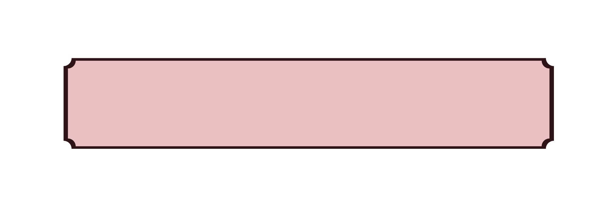

There are hundreds of contents circulating in the media today. Viewing these contents has no limit. Sometimes, we see unexpected contents that contain violence. Many people are on social media these days, especially teens. According to Mayo Clinic, in 2018, a survey of nearly 750 teens, ages 13 to 17 years old, found that 97% use a social media platform, such as YouTube, Facebook, Instagram, or Snapchat. This survey result shows that almost all teens use social media. The contents that they view in media may be inappropriate and harmful to them. But how do we separate the real content from the harmful ones to prevent harm?
We should first spread awareness about the different content that people may view in media. People should always be aware of what they encounter in the media. Media awareness is important to prevent harm. We, especially children, should be aware of the differences between appropriate and harmful content. Having limitations can also draw a line between “content” and harmful media. Reporting and blocking harmful content will also help in taking down this kind of content. We should not engage in harmful contents to avoid spreading these.
Many people ignore being cautious and just think about their own entertainment. It’s really important to be aware while on social media. We need to be always cautious on the contents we see. If we start doing what is right today, we will be able to draw a line between “content” and harmful media.